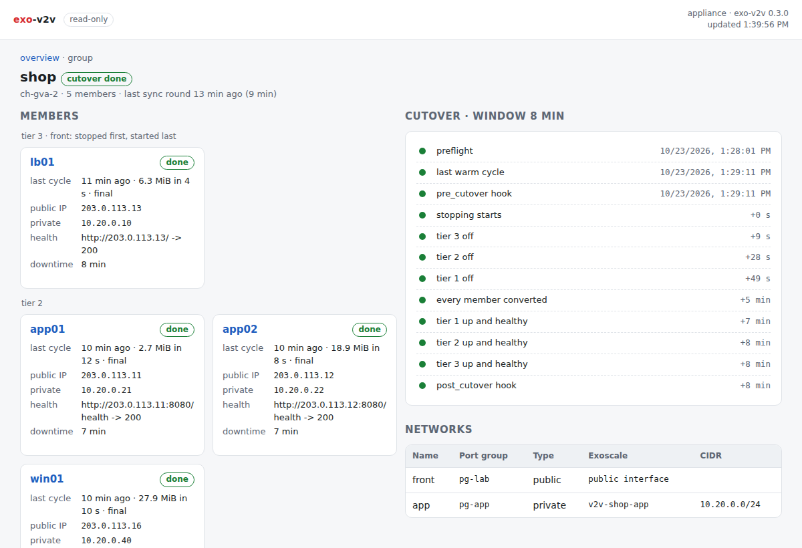

Web status page¶
Experimental. exo-v2v 0.3.0 is an early release, validated in one lab (ESXi 7.0 U3 to Exoscale ch-gva-2). Try it on non-critical VMs first; commands and behaviour may change.
exo-v2v web serves a read-only page with the state of every migration and
group on the replication appliance: phases, the last cycles, cutover steps,
downtime, member logs. Share it with the people who follow a migration without
giving them a shell.
sudo -E exo-v2v web # http://127.0.0.1:8780/
Run it as the user that runs the migrations (sudo -E, the same
EXO_V2V_HOME): it reads their state files.
What it shows¶
| Page | Content |
|---|---|
| Overview | Groups (cutover state, members by tier and phase), every migration: phase, a sync or cutover running now, last cycle, public and private addresses, downtime |
| Migration | Phase, source VM, receiver, a chart of the data copied per cycle (full, delta, final), disks and where they go, networks with the Exoscale MACs, the cutover steps with their times, plan and preflight messages, events |
| Group | Members by tier with their health check results, the cutover steps (preflight, warm cycle, tiers off, conversions, tiers up, hooks) with their times, networks, a member's log, events |

The page refreshes every 5 seconds. It needs no internet access: no external scripts, fonts or images.
Read-only¶
- Only
GETandHEAD; any other method gets405. - It never writes a file and never takes a lock: a running sync or cutover is found from the process ID its lock file records.
- It needs no Exoscale or vSphere credentials, and serves no keys: the
migration's SSH key and the tunnel's
known_hostsare not exposed. Logs are served only for group members, by name.
Access¶
It listens on 127.0.0.1:8780 by default. From your workstation:
ssh -L 8780:127.0.0.1:8780 appliance # then open http://127.0.0.1:8780/
To listen on another address, set a token; the page refuses to start without one:
openssl rand -hex 24 | sudo tee /etc/exo-v2v-web.token >/dev/null
sudo -E exo-v2v web --listen 0.0.0.0:8780 --token-file /etc/exo-v2v-web.token
Open http://appliance:8780/login?token=TOKEN once: it sets an HTTP-only
cookie. API clients send Authorization: Bearer TOKEN. The page is plain HTTP:
put it behind a TLS reverse proxy, or keep the SSH tunnel, on any network you
do not trust. EXO_V2V_WEB_TOKEN can carry the token instead of a file.
Run it as a service¶
# /etc/systemd/system/exo-v2v-web.service
[Unit]
Description=exo-v2v read-only status page
After=network-online.target
[Service]
Environment=EXO_V2V_HOME=/var/lib/exo-v2v
ExecStart=/opt/exo-v2v/bin/exo-v2v web --listen 127.0.0.1:8780
Restart=on-failure
[Install]
WantedBy=multi-user.target
JSON API¶
| Path | Returns |
|---|---|
/api/overview |
Host, version, groups and migrations (summaries) |
/api/migrations/NAME |
One migration: plan, cycles, cutover steps, events |
/api/groups/NAME |
One group: members, cutover, networks, events |
/api/groups/NAME/log/VM?lines=N |
The last N lines (at most 2000) of a member's log |